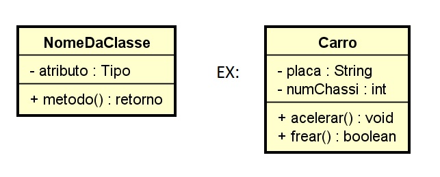

Resumo da Matéria
Introdução
Estudamos conceitos essenciais como encapsulamento, métodos construtores, método toString, diagramas UML, classes Java, classes estáticas, sobrecarga de métodos, exceções, herança, métodos abstratos, polimorfismo e JavaFX na disciplina de Orientação a Objetos em Java. Esses assuntos fornecem a base para o desenvolvimento de programas robustos e reutilizáveis, e o uso dos princípios da programação orientada a objetos para a criação de aplicações complexas e eficazes é possível.
IntelliJ:
O IntelliJ IDEA é um ambiente de desenvolvimento integrado (IDE) popular entre os desenvolvedores que fazem software em várias linguagens de programação, principalmente Java. O IntelliJ IDEA, desenvolvido pela JetBrains, tem funcionalidades sofisticadas como autocompletar inteligente, refatoração de código, depuração integrada, análise estática, ferramentas de teste e integração com sistemas de controle de versão como Git. Suas funcionalidades extensas e interfaces fáceis de usar aumentam a produtividade dos desenvolvedores, tornando o processo de desenvolvimento mais agradável e eficiente.
Estrutura de uma Classe
O plano de um objeto em Java, que inclui seus atributos (variáveis) e métodos (funções), é definido pela estrutura de uma classe. Estou listando alguns dos componentes essenciais de uma classe:
Encapsulamento
O princípio por trás do encapsulamento é que ele restringe o acesso direto aos dados de um objeto e permite apenas a manipulação por métodos definidos. Isso é feito por meio de modificadores de acesso privado, protegido e público. O encapsulamento protege e preserva a integridade dos dados.
Método Construtor
Quando você cria uma nova instância da classe, usa o método construtor. Ele pode inicializar objetos da classe e ser sobrecarregado para aceitar vários conjuntos de parâmetros.
Método toString
Um método único chamado método toString retorna uma representação do objeto em uma string. É útil para imprimir as características de um objeto de forma legível.
Diagrama de Classes
Um tipo importante de diagrama UML (Unified Modeling Language) é o diagrama de classes, que mostra a estrutura estática de um sistema orientado a objetos. Ele mostra as categorias do sistema, suas características, métodos e as relações entre eles. O diagrama de classes contém os seguintes componentes principais:
Classes Java
O núcleo da programação orientada a objetos na linguagem Java são as classes Java. Elas estabelecem a estrutura e o comportamento dos objetos encapsulando os dados (atributos) e as operações (métodos) que podem ser executadas sobre eles. Os seguintes elementos compõem uma classe, que funciona como um modelo para a criação de objetos (instâncias):
Utilização da Classe
Classes Estáticas
Em Java, as classes estáticas são definidas como classes staticas e não podem ser instanciadas. Geralmente, essas classes servem como contêineres para métodos e variáveis que pertencem à classe em si, em vez de instâncias de objetos.
Utilização da Classe
Sobrecarga de Métodos
Em Java, a sobrecarga de métodos permite que uma classe contenha dois ou mais métodos com o mesmo nome, desde que os parâmetros sejam diferentes. Esses métodos podem usar uma variedade de tipos de parâmetros, quantidades ou ordens.
Utilização da Sobrecarga de Métodos
Exceções
Em Java, as exceções são eventos que ocorrem durante a execução do programa e interrompem a execução normal do programa. Elas representam circunstâncias anormais que podem ocorrer durante o programa e precisam ser abordadas.
Tratamento de Exceções
Herança
Um mecanismo conhecido como herança em Java permite que uma classe herde métodos e campos de outra classe. A criação de hierarquias de classes e a reutilização de código são ambas incentivadas por ela.
Classes e Métodos Abstratos
As classes em Java que têm pelo menos um método abstrato e não podem ser instanciadas diretamente são chamadas de classes abstratas. Os métodos abstratos são aqueles que são expressos, mas não são aplicados em uma classe abstrata.
Polimorfismo
Em Java, o polimorfismo é a capacidade de um objeto se comportar de maneiras diferentes dependendo de seu tipo ou implementação de métodos. Isso permite que um método seja aplicado de várias maneiras em várias classes.
JavaFX
Uma biblioteca gráfica de plataforma cruzada chamada JavaFX permite o desenvolvimento de aplicativos de desktop com muitos recursos. Ele oferece uma variedade de controles de UI, gráficos, animações e funções multimídia.